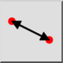
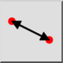
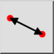
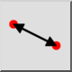

Distance Point to Point
Toolbar / Icon:
 

Menu: Info > Distance Point to Point
Shortcut: I, P
Commands: infodist | ip
Toolbar / Icon:
 

Menu: Info > Distance Point to Point
Shortcut: I, P
Commands: infodist | ip
This tool measures the exact distance between two points given by the user.